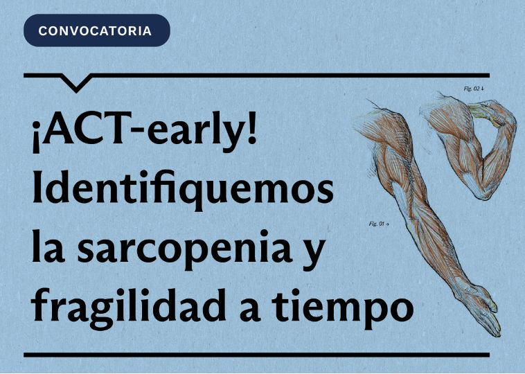
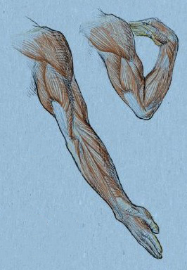
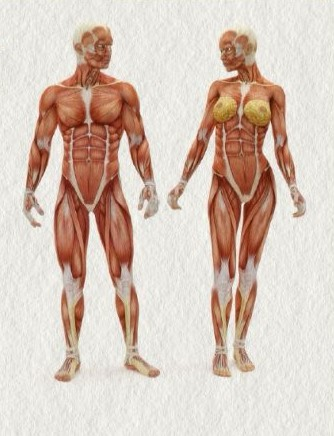
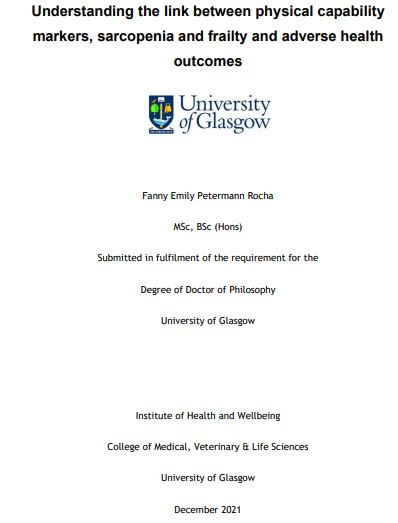

5
Portfolio Entries
4 projects and 1 doctoral scholarship
Research for healthier lives across the life course.
Explore Fanny's research projects in public health, epidemiology, healthy ageing, reproductive health and health innovation. This portfolio brings together four research projects and one doctoral scholarship.

4 projects and 1 doctoral scholarship
Research and prototype development
In progress
Includes the doctoral scholarship
Identifying sarcopenia and frailty earlier in Diego Portales University workers aged 35 to 59.
Explore four research projects and one doctoral scholarship. Status notes distinguish confirmed dates from inferred progress.

Research project
Reference: Women Academics Fund – UDP 2025; code not reported
Principal investigator / responsible researcher: Fanny Petermann-Rocha
Fanny’s role: Principal investigator
Collaborators / supervisors: Trained medical students; the full team is not listed in the consent form
Funded by: Diego Portales University — Vice-Rectorate for Research and Innovation (VRII), Women Academics Fund – UDP 2025
Study of sarcopenia, frailty and associated factors in UDP workers aged 35 to 59. It combines measurements of strength, gait and anthropometry with lifestyle questions to provide evidence for early detection and prevention.

Prototype development
Reference: Prototype Development GENCI UDP; code not reported
Principal investigator / responsible researcher: Fanny Petermann-Rocha (award recipient)
Fanny’s role: Award recipient and developer alongside Alonso Pizarro
Collaborators / supervisors: Alonso Pizarro — School of Civil Engineering UDP
Funded by: Diego Portales University — Prototype Development: Gender and Science (GENCI)
Development and validation of SCANNER, a tool for remote image-based anthropometric assessment. The support described by UDP aims to move from testing with 3D figures to validation in people, facilitating measurements for those unable to attend healthcare centres.
Research project
Reference: The Borrow Foundation; award code not reported
Principal investigator / responsible researcher: Andrés O. Celis (Chile); Alex D. McMahon (Glasgow)
Fanny’s role: Research team member
Collaborators / supervisors: David I. Conway; collaboration between University of Glasgow, University of Chile and Diego Portales University
Funded by: The Borrow Foundation
Evaluation of Chile's fluoridated milk programme and its relationship with dental caries in rural children and adolescents. It analyses oral health records, trends among 12-year-old schoolchildren and socioeconomic inequalities; it compares the programme with other fluoridation strategies to inform public policy.
Research project
Reference: Collaborative Research Fund – UDP 2022; code not reported
Principal investigator / responsible researcher: Heidy Kaune Galaz (lead researcher identified in UDP sources)
Fanny’s role: Collaborating researcher
Collaborators / supervisors: Fernando Zegers; Florencia Herrera; Martina Yopo
Funded by: Diego Portales University — Collaborative Research Fund – UDP
Pilot study of reproductive intentions and willingness to preserve fertility through egg cryopreservation. It surveyed 1,020 UDP students about their motherhood plans, conditions for having children and perceived barriers to accessing fertility preservation.

Doctoral scholarship / research training
Reference: ANID–Becas Chile 2018–72190067
Principal investigator / responsible researcher: Not applicable as project PI; Fanny Petermann-Rocha, thesis author and scholarship recipient
Fanny’s role: Scholarship recipient and doctoral researcher
Collaborators / supervisors: Supervisors: Jill P. Pell; Carlos Celis-Morales; Frederick K. Ho
Funded by: ANID — Government of Chile, Becas Chile
Doctoral funding at University of Glasgow. The thesis examined associations of physical capability, sarcopenia and frailty with adverse health outcomes in middle-aged and older adults, using UK Biobank data.